Offres — comparaison et états
1360 px et 390 px. Données fictives. Les annotations des maquettes sont des indications, jamais des éléments d’interface.
Principale — ordinateur
Avant — staging 86 Après — dernière révision
Après — dernière révision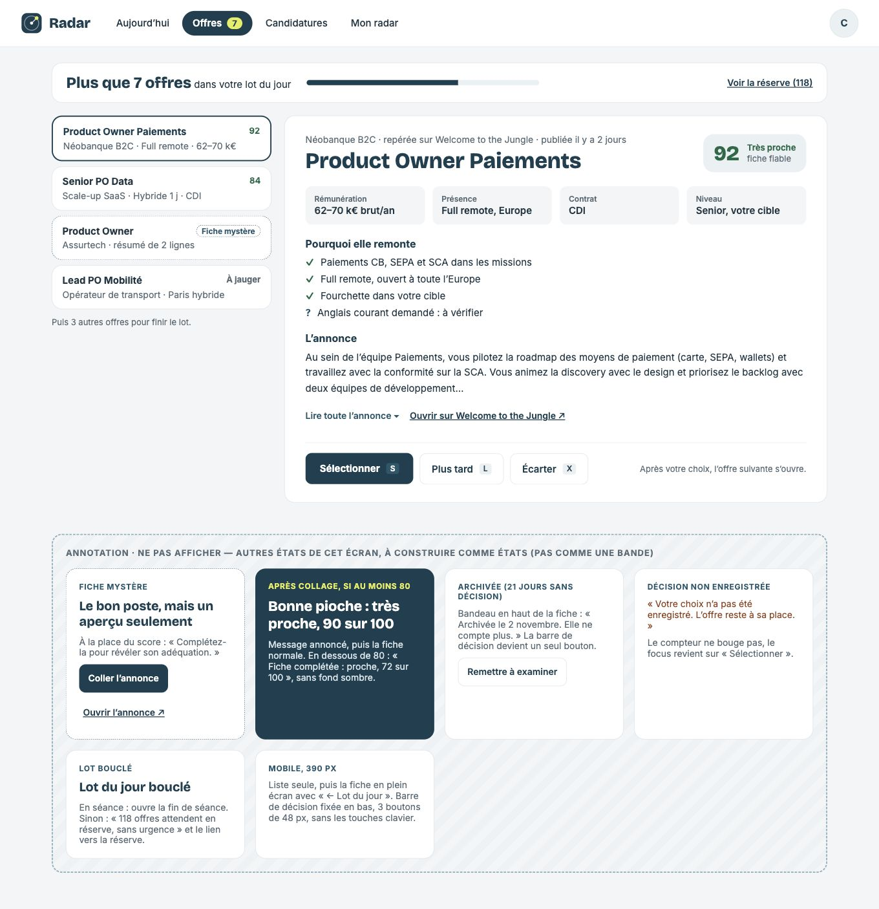
Maquette de référence Principale — mobile
Avant — staging 86Après — dernière révision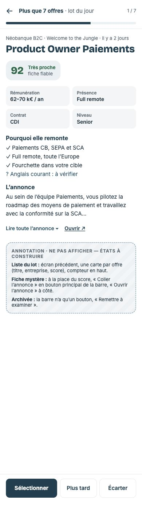
Maquette de référence Lecture au sommet des panneaux
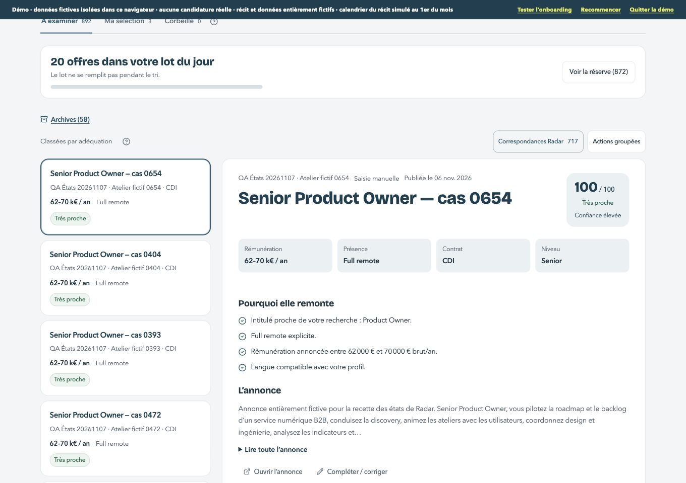
Lecture au sommet des panneaux — ordinateurLecture au sommet des panneaux — mobileRéférence ; les annotations décrivent les étatsFiche mystère
Fiche mystère — ordinateurFiche mystère — mobileRéférence ; les annotations décrivent les états Éditeur
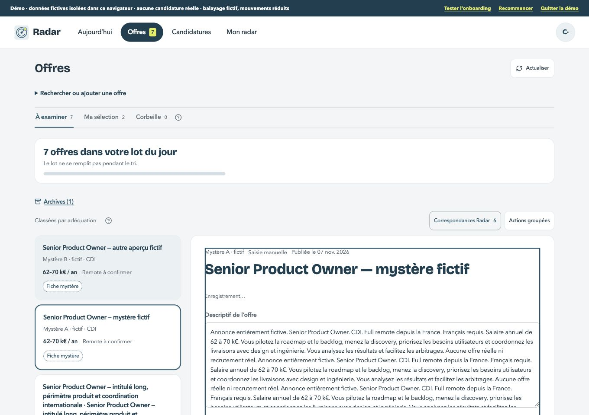
Éditeur — ordinateurÉditeur — mobileRéférence ; les annotations décrivent les étatsBonne pioche
Bonne pioche — ordinateurBonne pioche — mobileRéférence ; les annotations décrivent les états Confirmation sobre
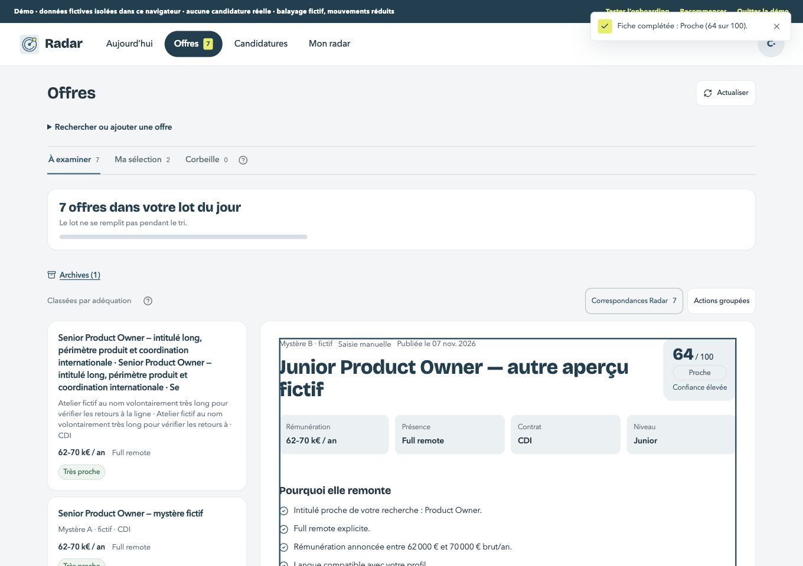
Confirmation sobre — ordinateurConfirmation sobre — mobileRéférence ; les annotations décrivent les étatsArchive
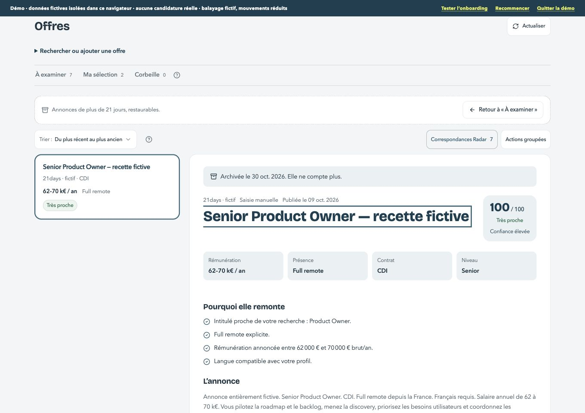
Archive — ordinateurArchive — mobileRéférence ; les annotations décrivent les étatsDécision non enregistrée
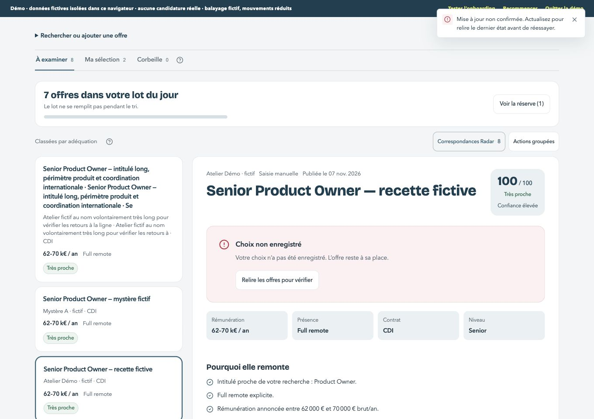
Décision non enregistrée — ordinateurDécision non enregistrée — mobileRéférence ; les annotations décrivent les étatsDécision confirmée
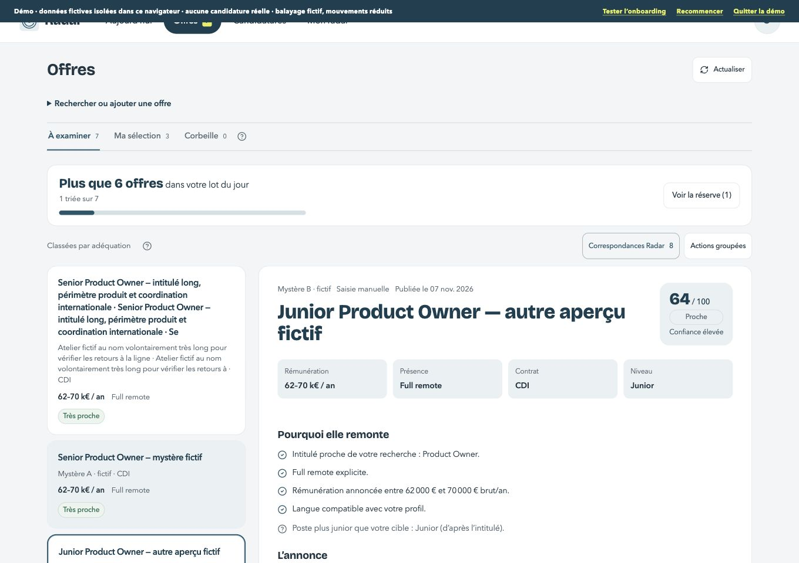
Décision confirmée — ordinateurDécision confirmée — mobileRéférence ; les annotations décrivent les étatsDécision en cours
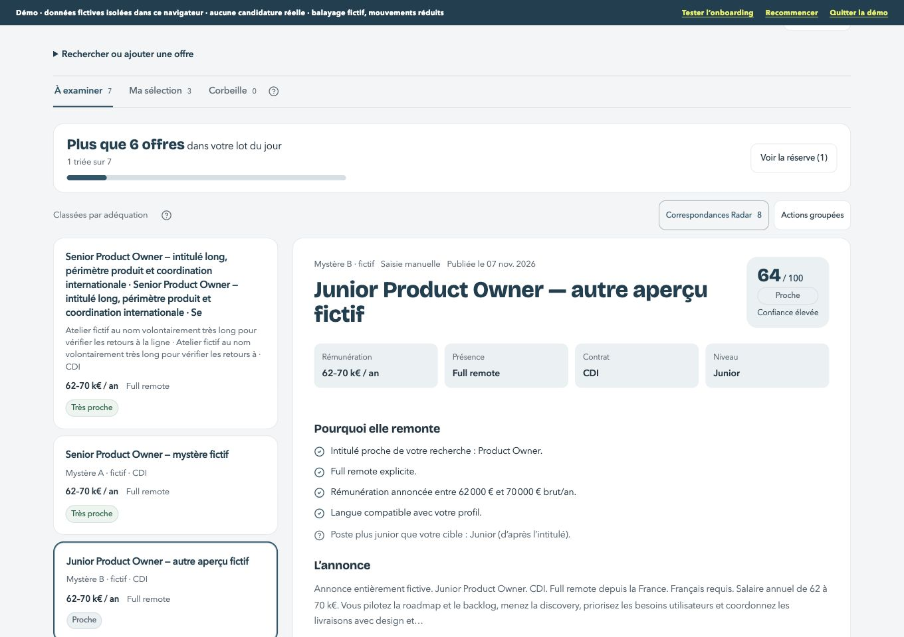
Décision en cours — ordinateurDécision en cours — mobileRéférence ; les annotations décrivent les étatsLot bouclé
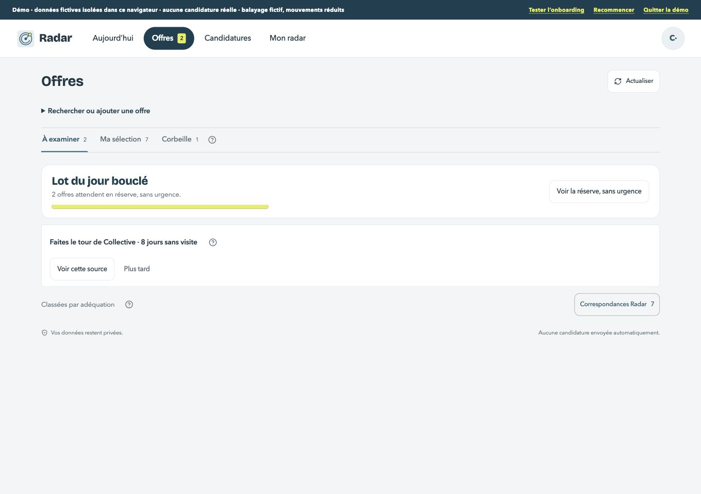
Lot bouclé — ordinateurLot bouclé — mobileRéférence ; les annotations décrivent les étatsRéserve
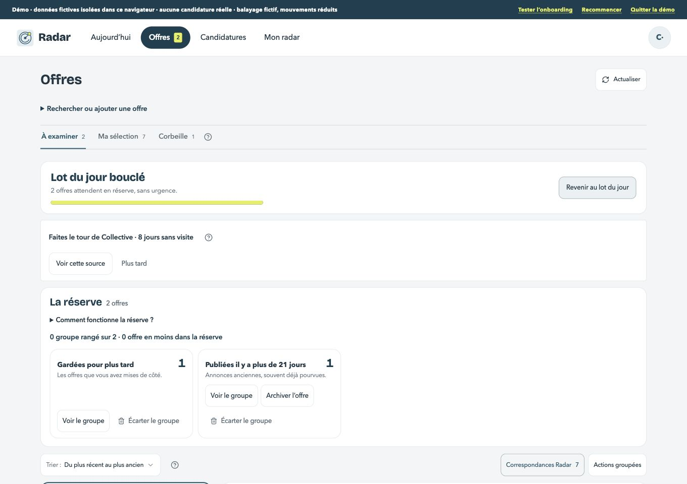
Réserve — ordinateurRéserve — mobileRéférence ; les annotations décrivent les étatsVide
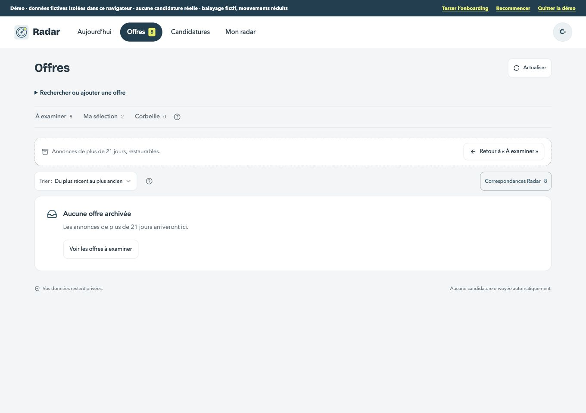
Vide — ordinateurVide — mobileRéférence ; les annotations décrivent les étatsChargement
Chargement — ordinateurChargement — mobileRéférence ; les annotations décrivent les états Erreur de lecture
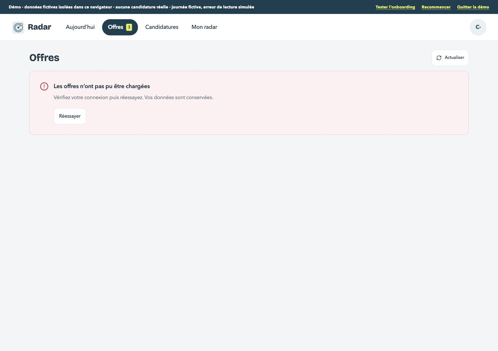
Erreur de lecture — ordinateurErreur de lecture — mobileRéférence ; les annotations décrivent les étatsTextes longs
Textes longs — ordinateurTextes longs — mobileRéférence ; les annotations décrivent les états